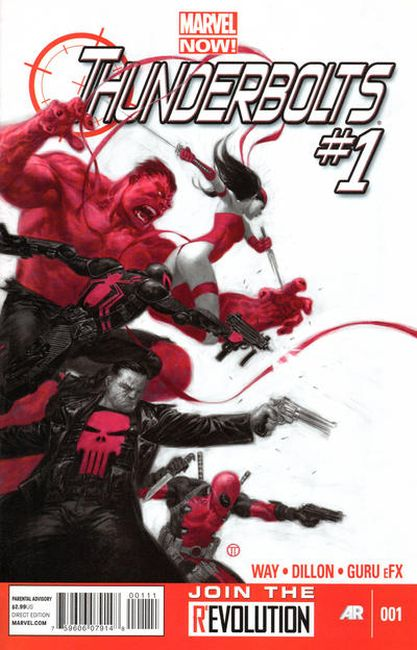

1997 #1: Distant Rumblings! - Written by Kurt Busiek. Illustrated by Steve Epting and Bob Wiacek.
A Flashback Special! Return to the early life of the man now known as Citizen V and see the forces which shaped his career! Plus, learn the final fate of the Golden Age Citizen V! All this and Namor, too!

2013 #1: Cover by Julian Totino Tedesco, Written by Daniel Way, Illustrated by Steve Dillon.
Red Hulk, Venom, Elektra, Deadpool, the Punisher. Forget the courts, the jails, the system - this team of Thunderbolts fights fire with fire, targeting the most dangerous and lethal players in the Marvel Universe with extreme prejudice. Led by General 'Thunderbolt' Ross, AKA the Red Hulk, this hand-picked team of like-minded operatives is going to make the world a better place...by all means necessary.